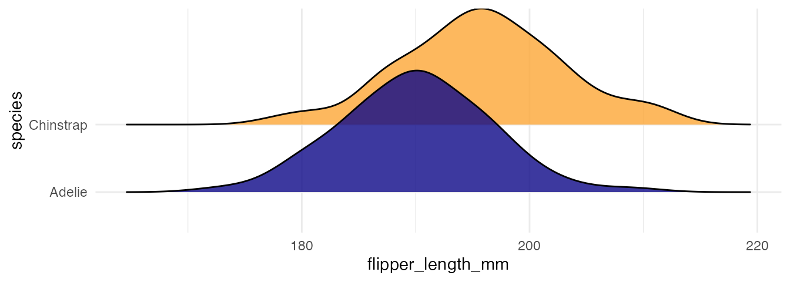
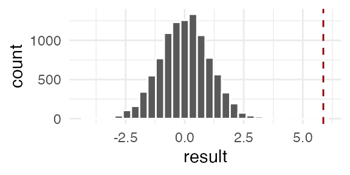
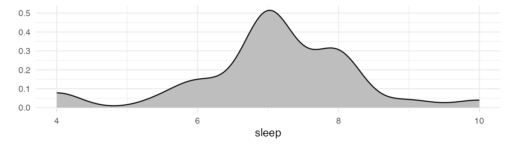

Formulate two competing hypotheses about the population: the null hypothesis and the alternative hyptohesis
Calculate a test statistic that summarizes the relevant information
Look at the behavior of the test statistic assuming that the null hypothesis is true
Compare the observed test statistic to the expected behavior (strength of evidence against the null)
State a conclusion in context.
Permutation Test Recap
Example: We are interested in whether there is a difference in the average flipper length between Adelie and Chinstrap penguins.

species
n
mean
sd
Adelie
151
189.95
6.54
Chinstrap
68
195.82
7.13
Pool the \(n_1 + n_2\) data values
Draw a sample of size \(n_1\) without replacement, assign those values to Group 1. Assign the remaining \(n_2\) values to Group 2.
Calculate the test statistic comparing the samples from the resampled groups.
Repeat steps 2 and 3 until we have enough samples.
Estimate the p-value as the proportion of times the observed test statistic exceeds the original (observed) test statistic: p-value = \(\frac{\text{\# statistics that exceed the original+1}}{\text{\# of statistics in the distribution+1}}\)
N <-10^4-1# Number of permutations to dosample_size <-nrow(penguins_subset) # Sample size for each permutation (same as data)x <- penguins_subset$flipper_length_mm # data vectorresult <-numeric(N) # Create an empty vector to store resultsfor (i in1:N){ index <-sample(sample_size, 68, replace =FALSE) # Sample indices for group 1 result[i] <-mean(x[index]) -mean(x[-index]) # Compute differences between groups}sum(result >= observed +1)/(N+1)
[1] 0

T-Test for a difference in means
Instead of conducting a permutation test, we can instead assume that (a) our data comes from a normal population or (b) that the CLT applies.
Example: Use the summary table from p1 to perform a t-test for \(H_0: \mu_{\text{Chinstrap}} - \mu_{\text{Adelie}} = 0\) against \(H_A: \mu_{\text{Chinstrap}} - \mu_{\text{Adelie}} \ne 0\)
t.test(x_vector, y_vector)t.test(numeric_vector ~ group_vector, data = dataset_name)
t.test(flipper_length_mm ~ species, data = penguins_subset)
Welch Two Sample t-test
data: flipper_length_mm by species
t = -5.7804, df = 119.68, p-value = 6.049e-08
alternative hypothesis: true difference in means between group Adelie and group Chinstrap is not equal to 0
95 percent confidence interval:
-7.880530 -3.859244
sample estimates:
mean in group Adelie mean in group Chinstrap
189.9536 195.8235
T-Test for one mean
Example: Do Carls sleep less than 8 hours per night? A sample of Stat 120 students answered the question: “On average, how many hours of sleep do you get on a weeknight?”

n
30.00
mean
7.07
sd
1.23
median
7.00
min
4.00
max
10.00
Set up a t-test for this question. Include assumptions, hypotheses, test statistic, distribution of the test statistic under the null hypothesis, and p-value computation.
t.test(~sleep, data = survey, mu =8, alternative ="less")
One Sample t-test
data: sleep
t = -4.1565, df = 29, p-value = 0.0001306
alternative hypothesis: true mean is less than 8
95 percent confidence interval:
-Inf 7.448201
sample estimates:
mean of x
7.066667
Hypothesis tests for binomial data
Example: Do Americans support a national health plan? A Kaiser Family Foundation poll for a random sample of US adults in 2019 found that 79% of Democrats, 55% of Independents, and 24% of Republicans supported a generic “National Health Plan.” There were 347 Democrats, 298 Republicans, and 617 Independents surveyed. A political pundit on TV claims that a majority of Independents support a National Health Plan. Do these data provide strong evidence to support this type of statement?
Assume:
Hypotheses:
Test Statistic:
Null distribution:
sum(dbinom(339:617, 617, .5))
[1] 0.007822546
binom.test(x =339, n =617, p =0.5, alternative ="greater")
data: 339 out of 617
number of successes = 339, number of trials = 617, p-value = 0.007823
alternative hypothesis: true probability of success is greater than 0.5
95 percent confidence interval:
0.5155507 1.0000000
sample estimates:
probability of success
0.5494327
CLT Assumption:
Approx null distribution:
Large-sample test statistic:
prop.test(x =339, n =617, p =0.5, alternative ="greater")
1-sample proportions test with continuity correction
data: 339 out of 617
X-squared = 5.8347, df = 1, p-value = 0.007857
alternative hypothesis: true p is greater than 0.5
95 percent confidence interval:
0.5155287 1.0000000
sample estimates:
p
0.5494327
Is n large enough to use the CLT?
Many textbooks suggest _______________ and ________________
Our textbook suggest _______________ and ________________